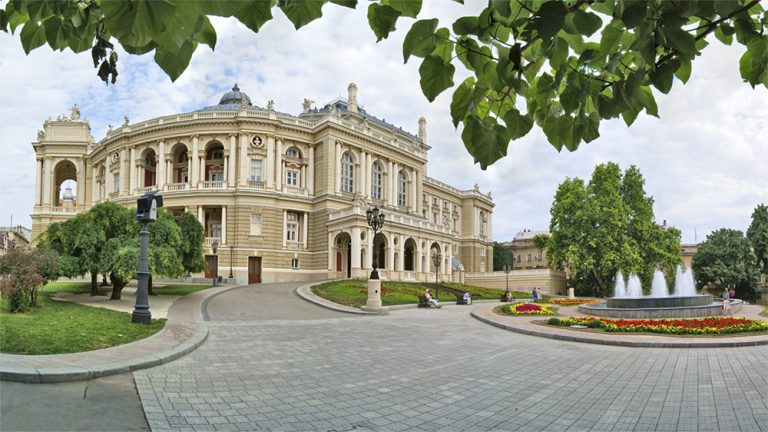

Дата та місце народження: 1 червня 2007 року, м. Київ
Освіта: ліцей "Білоцерківський колегіум" м. Біла Церква, зараз навчаюсь у КПІ ім. Ігоря Сікорського.
Хоббі:
Улюблені фільми:
Одеса — місто на півдні України, адміністративний центр Одеської області та найбільший морський порт країни на березі Чорного моря. Місто засноване у 1794 році на місці фортеці Хаджибей. Історичний центр Одеси з 2023 року входить до списку Світової спадщини ЮНЕСКО.
У 1794 році — заснування міста,
у 1819—1859 рр. — діяв режим порто-франко (вільної торгівлі),
у 1841 році — завершено будівництво Потьомкінських сходів,
у 1941 році — 73 дні оборони міста у Другій світовій війні,
а з 1991-го — у складі незалежної України.
